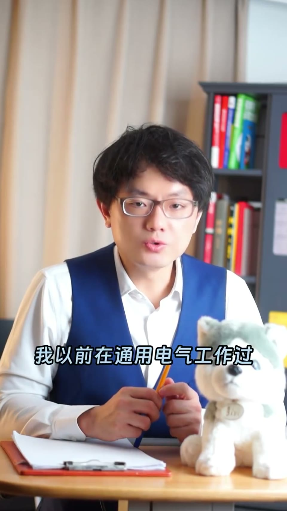
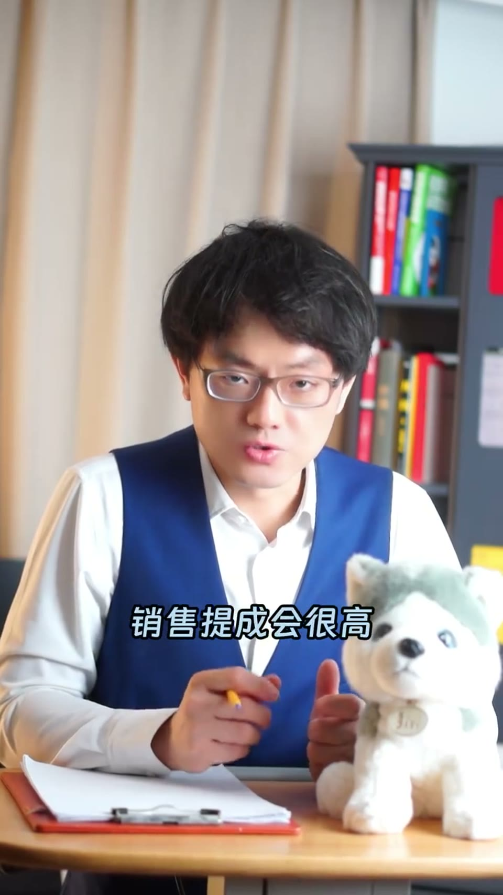
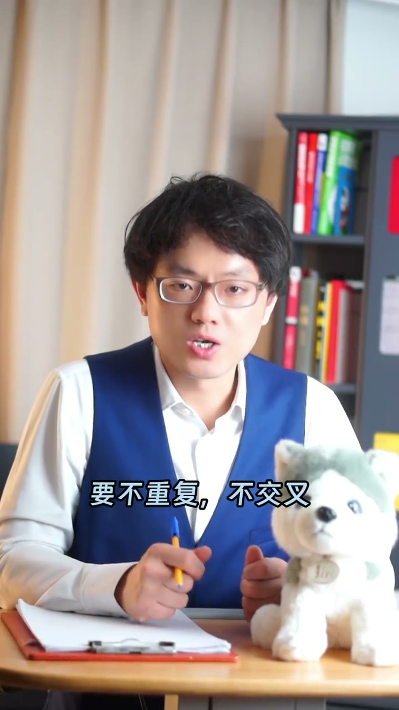
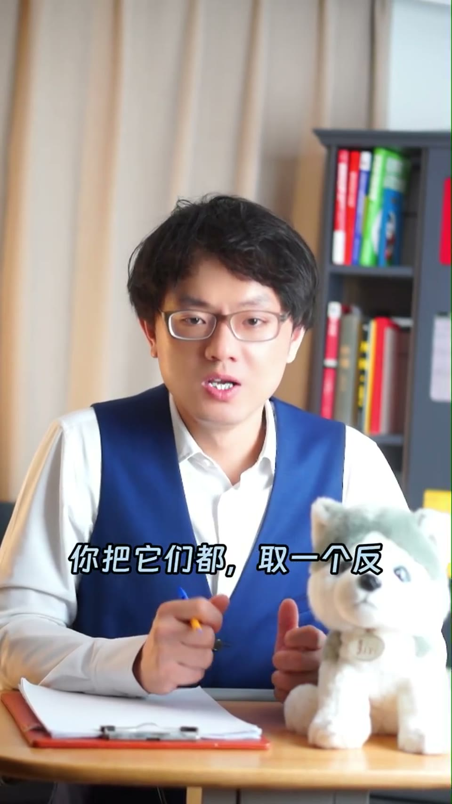
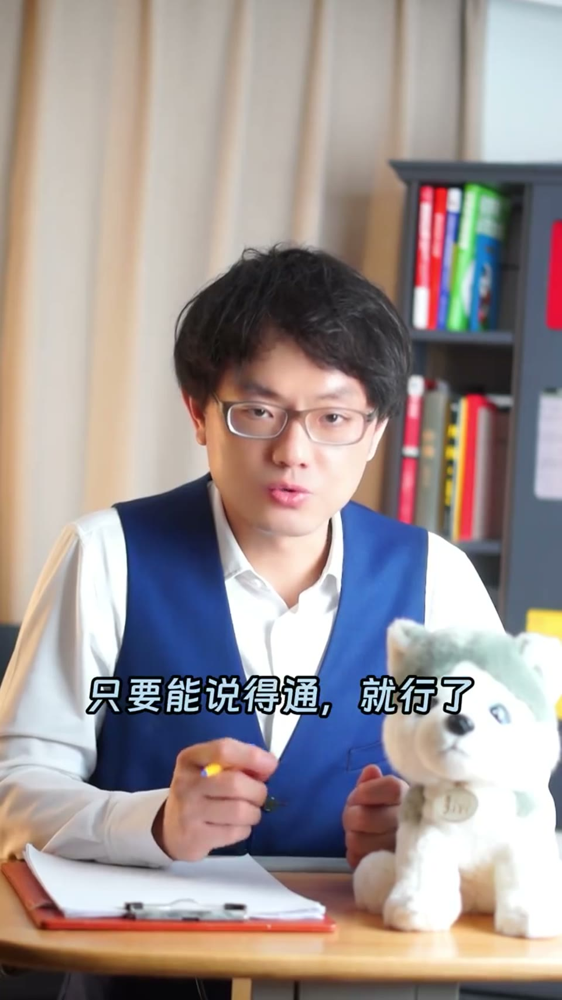

内容要点
一支 2 分半的销售信任课：怎么做销售时一定会被客户挑战的大难题——你说你们是专家？怎么证明？在通用电气时名片上的 GE logo 已提前告诉客户，但销售提成低；去了创业公司问题就来了。电力局客户的话很扎心：选 ABB、西门子、GE，将来出问题我的选择也是正确；选你们即使选对了将来也可能被说选错。直到转做培训与人才发展才找到答案：给他一张 A4 纸，不停写出这个领域的 50 个关键词，不能停、不能重复——半瓶醋当场冒冷汗。
知识结构
怎么做销售时你一定不会（会被）客户挑战的大难题：怎么证明你们是专家？
通用电气时期电力客户从不问，因为名片上 GE 的 logo 已经提前告诉对方了。
电力局客户：选 ABB 西门子 GE 出问题我的选择也是正确；选你们选对也可能被说选错。
在知名企业做销售提成低，信任来自品牌 logo 跟你没关系；创业公司提成高但难题大。
转做培训后找到答案：A4纸写50个领域关键词，不能停、不能重复，半瓶醋当场冒冷汗。
大品牌的信任来自 logo 而非你；证明专家身份的硬核方法——不停写 50 个领域关键词，真专家脱口而出，半瓶醋当场现形。
00:00-00:45大难题与 GE 的答案
「怎么证明你们是专家？这是你在做销售时一定会被客户挑战的一个大难题。你说你们是这个领域的专家？好，怎么证明？」
「我以前在通用电气工作过，电力系统的客户从来不会问我这个问题，因为名片上 GE 的 logo 已经提前告诉对方了。后来因为职业发展，我去了一家深圳创业公司，于是问题就来了。」


00:45-01:50创业公司的困境
「当时电力局的客户跟我讲过一句很经典的话。他说：项目设备招标我选 ABB、西门子、GE，将来 G 出问题了我的选择也是正确的；但如果我选你们，即使选对了，将来非常有可能就是选错了。」
「如果你跟我一样在曾经的知名企业工作过，你不会遇到这种难题。你在那里做销售，提成佣金会很低，因为客户的信任来源于他的品牌、他的 logo，跟你没有半毛钱关系。」
「如果你在创业公司，销售提成会很高，但你就会遇到刚才所说的那个难题：怎么证明你们是专家？」


01:50-02:22A4纸测试
「就在我一直苦苦探索，没有找到完美答案的时候，公司调我去做培训与人才发展，终于在那个领域我找到一个还不错的答案。现在我经常用这个方案去打击那些自认为自己是高手、但其实是半瓶醋的人。」
「怎么做呢？你说你是专家对吧？好，我们来测试一下。给你一张 A4 纸、一支笔，然后我说开始，请你不停顿地写出这个领域内的关键词 50 个。要求有两个：第一，不能停，如果你想的时间超过 0.1 秒，对不起，我就把 A4 纸收回去了，看看你写了几个；第二，写出来的单词要不重复、不交叉，都是独立概念。」
「你会发现，半瓶醋的同学已经开始脑门冒冷汗了，因为他写不出来，还没……」

完整转录（39段）
以下文本由 Whisper medium 模型自动转录，可能存在少量识别误差，已尽可能修正。
怎么证明你们是专家?
这是在做销售时你一定不会被客户挑战的一个大难题
你说你们是这个领域的专家?好,怎么证明?
我以前在通用电器工作过,电力系统的客户从来不会问我这个问题
因为名片上G的logo已经提前告诉对方了
后来因为职业发展我去了一家深圳创业公司,于是问题就来了
当时电力局的客户跟我讲过一句很经典的话
他说项目设备招标我选ABB,西门子,G,将来G7G7出问题了我的选择也是正确
但如果我选你们,即使选对了将来非常有可能就是选错了
如果你跟我一样在曾经的知名企业工作过,你不会遇到这种难题
你在那里做销售,提成佣金会很低
因为客户的信任来源于他的品牌,他的logo跟你没有半毛钱关系
如果你在家创业公司,销售提成会很高
但你就会遇到刚才所说的那个难题,怎么证明你们是专家?
就在我一直苦苦探索,没有找到完美答案的时候呢
公司调我去做培训与人才发展,终于在那个领域我找到一个还不错的答案
现在我经常用这个方案去打击那些自认为自己是高手,但其实是半凭之处的人
怎么做呢?你说你是专家对吧?好,我们来测试一下
给你张A4纸,一直比,然后我说开始
请你不简单地写出这个领域内关键词
50个,要求有两个,第一,不能停
如果你想的时间超过0.1秒,对不起,我就把A4纸收回去了,看看你写了几个
第二,写出来的单词要不重复不交叉,都是独立概念
你会发现半凭之处的同学已经开始脑毛冒冷汗
因为他写不出来,还没完,即便你侥幸写出50个关键词
后面还有一轮饱和打击,我会告诉他,现在我随机抽一个你写的概念
请立即开始5分钟的进行演讲,要求是不能停不能重复
大哥,一个领域你50个关键词都讲不下来,那还叫什么专家?
后来这个方法升级了,因为我看了一本销售神作,叫Spin销售法则
把这个方法给升级了一下,如果客户问你怎么证明你们是专家
你可以说,我们公司把这个领域内所有的错误都犯过一遍了
前面不是让你写50个关键词吗?每个关键词准备5分钟的进行演讲吗?
你把他们都取一个反,没有做到什么什么,会有什么后果
比如项目中的关键供应商送货条件,如果CIF跟DDP搞错了,会有什么后果?
你在拜访客户之前,把50个关键词的故事都准备好
然后挑几个客户感兴趣的话题聊下去
其实你们公司不用真正去犯这些错误,在纸面上推演一下
只要能说得通就行了,我应该表达清楚了,希望这条视频对你有启发
谢谢观看